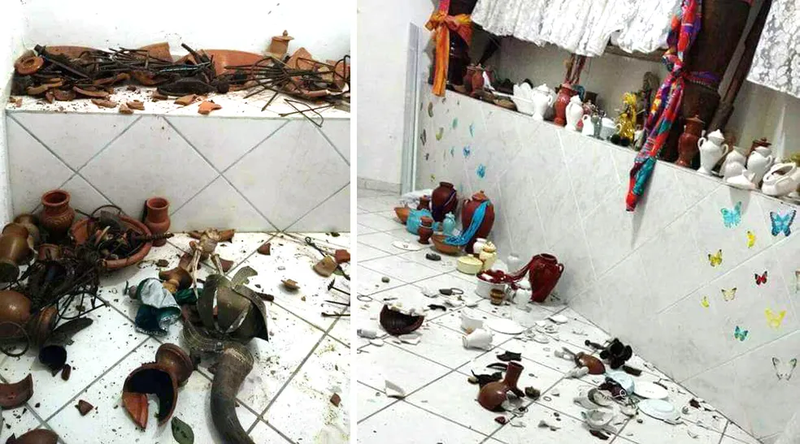
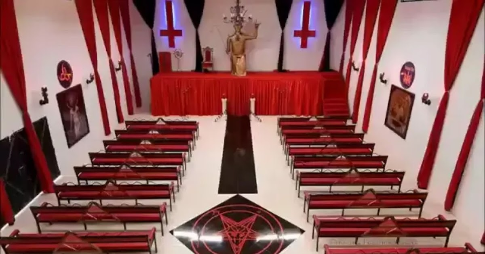

Caso real com a Umbanda:

Caso com a Umbanda:
Terreiro de Umbanda é alvo de ataque e roubo; Bíblia é deixada no local.
Caso real com a Quimbanda:

Caso com a Quimbanda:
Pai de santo morto a facadas dentro de terreiro da Bahia.
Santuário dos Satanistas

Caso com o Satanismo:
Não foram encontradas matérias que falassem especificamente sobre preconceito com o Satanismo. Porém, foram encontradas fotos de acontecimentos relacionados ao tema.